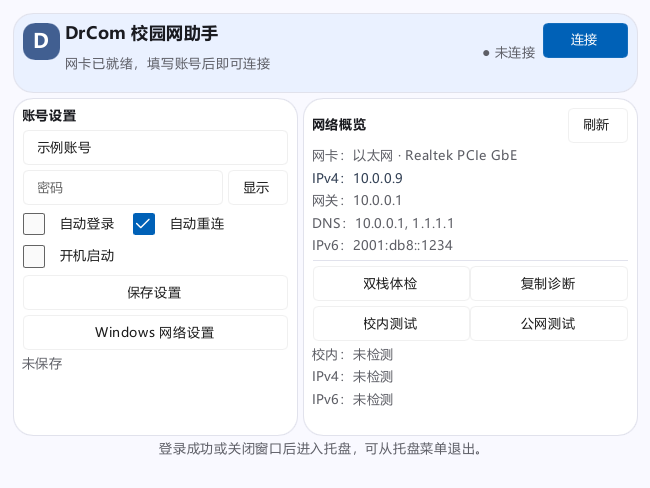

Windows x64 · Rust + Slint
DrCom 校园网助手
一个用于吉林大学校园网的 Dr.COM 客户端。填写账号密码即可登录，支持自动保活和断线重连，也能查看网卡信息、检测 IPv4 / IPv6 网络。
Rust 原生程序，常驻占用约 24 MiB。保存账号后可自动登录，优先使用上次认证成功的网卡。
安装包和更新说明见 GitHub Releases。

使用优势
占用低，适合常驻
本机实测工作集约 24 MiB，运行时只有 4 个线程。认证与保活由程序独立完成，无需安装原版组件。
登录流程更直接
直接进行网卡探测与认证，优先使用上次认证成功的网卡，减少重复探测。保存账号后可自动登录，断线后也能自动恢复。
- 工作集内存
- 23.95 MiB
- 私有提交内存
- 5.56 MiB
- 线程数
- 4 个
本机实测：2026-10-26 · Windows x64 · Rust 1.0.4，10 次采样的内存中位数。实际占用随运行环境变化。采样数据 · 测量说明
主要功能
自动登录与重连
连接后自动发送心跳保活；可开启自动登录、自动重连和开机自启。
网络信息与检测
显示网卡、IP、网关和 DNS，支持校内连通性检测及 IPv4 / IPv6 外网检测。
托盘运行
关闭窗口后可继续在托盘运行，通过托盘菜单连接、下线或退出。
凭据加密
保存的账号凭据由 Windows DPAPI 加密，避免以明文保存密码。
使用方法
- 下载安装
到发布页下载 Windows x64 安装包，按提示安装。
- 填写账号
接入校园网后，输入自己的校园网账号和密码。
- 点击连接
登录成功后保持运行，按需开启自动登录和开机自启。
项目也提供命令行工具 drcom-cli，适合脚本或无桌面环境。配置与参数说明见 README。